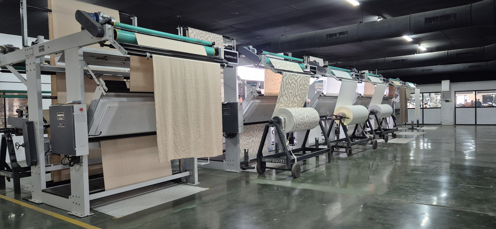

ABOUT US
About FIDAS Lite
FIDAS Lite replaces manual fabric inspection with a fast, digital system. Designed for mid-size textile mills, it helps teams track defects in real-time, standardize grading, and improve decision-making.

